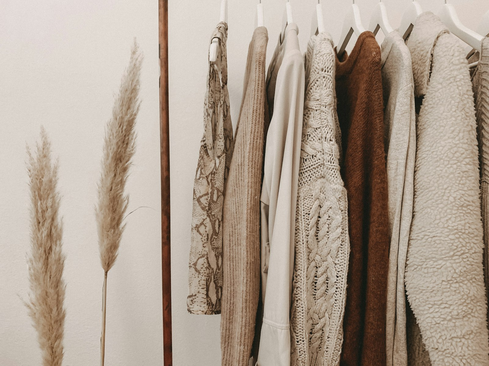

Sai lầm phổ biến nhất của designer Việt khi làm sản phẩm cho thị trường Mỹ: mang chuẩn thẩm mỹ trong nước áp lên khách hàng ngoại quốc. Kết quả là những thiết kế "đẹp mà không ai mua". Sau hàng nghìn mẫu POD được đưa ra thị trường, đây là những nguyên tắc thiết kế chuẩn thị hiếu phương Tây mà chúng mình rút ra từ thực chiến.
Bài viết này không dạy bạn dùng phần mềm, nó dạy bạn nghĩ như người mua Mỹ. Vì trong Print-on-Demand, một thiết kế kỹ thuật trung bình nhưng đúng insight luôn thắng một thiết kế kỹ thuật điêu luyện nhưng lệch thị hiếu. Đó là bài học đắt giá nhất mà đội Design của Ethan Ecom muốn chia sẻ với bạn.
01. Khác biệt thẩm mỹ Đông – Tây: hiểu trước khi vẽ
Thẩm mỹ đại chúng Việt Nam chuộng sự đầy đặn: màu rực, chi tiết dày, chữ uốn lượn, hiệu ứng đổ bóng lấp lánh. Thẩm mỹ tiêu dùng Mỹ, nhất là nhóm khách mua quà tặng và đồ trang trí, lại chuộng sự tiết chế: khoảng trống rộng rãi, ít màu, thông điệp rõ ràng trong một giây đầu tiên. Hai hệ giá trị này gần như ngược nhau, và designer mới thường vẽ theo bản năng cũ mà không nhận ra.
Ví dụ cụ thể: một mẫu áo Giáng sinh kiểu Việt thường gom đủ ông già Noel, tuần lộc, cây thông, hộp quà và tuyết rơi vào một khung hình. Trong khi mẫu bán chạy trên thị trường Mỹ nhiều năm liền chỉ là dòng chữ "Merry & Bright" bằng font serif trên nền đỏ đô, không hình minh họa nào cả. Người Mỹ không mua "bức tranh Giáng sinh"; họ mua cảm giác lễ hội được nói ra một cách thanh lịch.
- Việt Nam: càng nhiều chi tiết càng "có tâm"; màu tươi thể hiện sự vui vẻ, sung túc.
- Mỹ: càng ít chi tiết càng cao cấp; khoảng trống là một phần của thiết kế, không phải chỗ trống cần lấp.
- Hệ quả cho seller: trước khi đăng bán, hãy tự hỏi "mẫu này giống sản phẩm đang bán chạy ở Target/Etsy, hay giống áo nhóm ở chợ Việt?"
02. Khách Mỹ mua "câu chuyện của họ", không mua hình đẹp
Người mua POD phương Tây tìm sản phẩm nói thay điều họ muốn nói: về gia đình, thú cưng, nghề nghiệp, sở thích. Một chiếc áo thêu chữ "Dog Dad" đơn giản bán tốt hơn một bức tranh chó vẽ tay cầu kỳ, vì nó là danh tính, không phải trang trí. Trước khi mở phần mềm thiết kế, hãy trả lời: ai mặc sản phẩm này, và họ muốn người khác đọc được gì về họ?
Cặp ví dụ thắng – thua mà chúng mình hay dùng khi đào tạo designer mới: mẫu thua là bức chân dung y tá vẽ chi tiết theo phong cách anime, đẹp, kỳ công, nhưng không y tá Mỹ nào thấy mình trong đó. Mẫu thắng là dòng chữ "Nurse: I can't fix stupid, but I can sedate it" đặt trên nền trơn, hài hước, đúng chất tự trào của nghề, và người mặc lập tức trở thành người kể chuyện. Thiết kế thắng vì nó trao cho khách một vai diễn xã hội, không phải một hình minh họa.
03. Màu sắc: tiết chế là cao cấp
- Bảng màu đất, pastel, trung tính (sage, terracotta, cream, navy) thắng thế trong nhóm quà tặng và trang trí nhà nhiều năm liên tiếp.
- Mỗi thiết kế nên kỷ luật trong 2–3 màu; với sản phẩm thêu, ít màu còn đồng nghĩa chi phí chỉ thấp hơn và thành phẩm sắc nét hơn, bạn có thể đọc thêm ở bài thêu vi tính hay in áo.
- Màu neon, gradient rực rỡ chỉ hợp một số niche trẻ (gaming, rave), đừng dùng làm mặc định cho mọi sản phẩm.
Ví dụ thắng – thua về màu: cùng một câu chữ "Mama Bear", phiên bản chữ nâu đất trên áo màu cream đều đặn nằm trong nhóm bán chạy của niche mẹ và bé; phiên bản chữ bảy màu gradient trên áo đen gần như không có chuyển đổi dù chạy cùng ngân sách quảng cáo. Người mua nhóm này muốn món đồ hòa vào tủ quần áo hằng ngày của họ, và tủ đồ người Mỹ trưởng thành phần lớn là màu trung tính.


04. Typography là 80% thiết kế POD
Phần lớn sản phẩm POD bán chạy là text-based. Ba nguyên tắc: chọn font có ngữ cảnh văn hóa đúng (serif cổ điển cho vintage, script mềm cho quà tặng mẹ, sans đậm cho humor); tối đa 2 font trong một thiết kế; và luôn kiểm tra khả năng đọc ở kích thước thật, thiết kế nhìn tốt trên màn hình 27 inch có thể thành mờ nhòe trên túi áo thêu 10cm.
Ví dụ thắng – thua về font: mẫu quà cưới dùng font script quá bay bướm khiến tên cô dâu chú rể gần như không đọc được khi thêu nhỏ, khách nhận hàng thất vọng, đánh giá thấp. Mẫu thắng dùng script vừa phải cho tên riêng, kết hợp serif mảnh cho ngày cưới: sang, dễ đọc, và xưởng thêu chạy chỉ mượt hơn hẳn. Kinh nghiệm của chúng mình: in mẫu ra giấy đúng kích thước thật, dán lên áo, lùi lại hai mét, nếu vẫn đọc rõ trong một giây, font đó đạt.
05. Đào sâu niche thay vì chạy theo trend đại chúng
Trend đại chúng cạnh tranh khốc liệt và chết nhanh. Niche văn hóa, nurse, teacher, camping, fishing, cat mom, sống bền qua năm tháng và có cộng đồng sẵn sàng trả giá cao cho sản phẩm "hiểu mình". Cách nghiên cứu nhanh: đọc comment trong các group Facebook và subreddit của niche, ghi lại chính xác cụm từ họ dùng, đưa nguyên văn vào thiết kế luôn hiệu quả hơn lời bạn tự nghĩ ra. Nếu muốn làm bài bản hơn, chúng mình đã viết riêng một quy trình 5 bước nghiên cứu niche POD đáng để bạn đọc trước khi vẽ mẫu đầu tiên.
Dưới đây là bảng ghép nhanh giữa các niche phổ biến và phong cách thiết kế thường "ăn" nhất, đúc kết từ những mẫu chúng mình quan sát bán tốt trên các sàn:
| Niche phổ biến | Phong cách thiết kế hợp | Gợi ý màu & font |
|---|---|---|
| Thú cưng (Dog Mom, Cat Dad) | Line-art tối giản, câu chữ hài hước, chân dung cá nhân hóa | Trung tính, be, nâu · sans đậm hoặc script mềm |
| Nghề nghiệp (Nurse, Teacher) | Badge retro, câu tự trào về nghề, huy hiệu tri ân | Navy, đỏ đô · serif cổ điển, sans bo tròn |
| Outdoor (Camping, Fishing) | Badge vintage, phong cảnh tối giản một màu | Xanh rêu, cam đất · slab serif, chữ in hoa |
| Gia đình & dịp lễ | Monogram, tên cá nhân hóa, minh họa mộc mạc | Pastel, cream · script kết hợp serif mảnh |
| Faith / tôn giáo | Câu trích thanh lịch, bố cục căn giữa nhiều khoảng trống | Cream, sage · serif mảnh, chữ thường |
| Humor / sarcasm | Text thuần, đậm, không hình minh họa | Đen – trắng · sans siêu đậm, căn giữa |
06. Test nhanh, giữ lại mẫu thắng
Không ai đoán trúng thị hiếu 100%. Quy trình của chúng mình: mỗi concept ra 5–10 biến thể → đăng bán đồng loạt → sau 2 tuần giữ lại mẫu có chuyển đổi, tắt mẫu yếu → nhân bản mẫu thắng sang sản phẩm khác (áo → mũ → tote). Thiết kế cho POD là trò chơi xác suất có kỷ luật, không phải cuộc thi sáng tác.
Điểm nhiều người bỏ qua: khi một mẫu thắng, đừng chỉ nhân bản sản phẩm, hãy phân tích vì sao nó thắng. Là câu chữ, bố cục, màu, hay đúng dịp mùa vụ? Ghi lại thành "công thức" nội bộ để những mẫu sau không bắt đầu từ con số không. Sau vài chu kỳ test, đội thiết kế sẽ có một thư viện công thức riêng, tài sản lâu dài thật sự.
07. Bản quyền & trademark: cái bẫy seller Việt hay dính nhất
Thiết kế đẹp mấy cũng vô nghĩa nếu khiến shop bị khóa. Vi phạm sở hữu trí tuệ là lý do hàng đầu khiến tài khoản seller Việt "bay màu" vĩnh viễn trên các sàn quốc tế, và phần lớn vi phạm đến từ sự chủ quan chứ không phải cố ý.
- Nhân vật và thương hiệu: chuột hoạt hình nổi tiếng, logo đội thể thao, tên ban nhạc, tuyệt đối không dùng, kể cả "vẽ lại theo phong cách khác".
- Câu nói có trademark: nhiều cụm từ tưởng chung chung ("Let's Do This", tên phong trào, khẩu hiệu viral) đã được đăng ký nhãn hiệu. Tra miễn phí trên hệ thống USPTO trước khi dùng bất kỳ câu chữ nào làm chủ đạo.
- Font và hình stock: font miễn phí cho mục đích cá nhân không đồng nghĩa miễn phí thương mại. Luôn đọc license; ưu tiên font có giấy phép thương mại rõ ràng.
- Nguyên tắc an toàn của chúng mình: nghi ngờ thì bỏ. Một ý tưởng thay thế chỉ mất một giờ; một lần bị khóa shop mất cả năm gây dựng.
08. Quy trình designer × seller tại Ethan Ecom
Tại Ethan Ecom, designer không ngồi vẽ một mình rồi "giao file". Chúng mình vận hành một vòng lặp khép kín giữa đội thiết kế, đội bán hàng và xưởng sản xuất in-house, và chính vòng lặp này giúp các Sparrows ra mẫu nhanh mà vẫn đúng thị hiếu:
- Brief từ seller: niche, dịp bán, chân dung người mua, cụm từ khóa khách đang tìm, không có brief, không vẽ.
- Moodboard 30 phút: designer gom 10–15 mẫu tham chiếu đang bán tốt để thống nhất "vùng thẩm mỹ" trước khi phác thảo.
- Phác thảo & duyệt chéo: 3–5 hướng nhanh, seller chọn dựa trên dữ liệu thị trường chứ không dựa trên cảm tính "thấy đẹp".
- Kiểm tra sản xuất: xưởng thêu và in xác nhận mẫu chạy được ở kích thước thật, số màu chỉ hợp lý, bước này chặn được rất nhiều thiết kế "đẹp trên màn hình, hỏng trên vải".
- Chạy mẫu thật & chụp ảnh: sản phẩm mẫu được sản xuất ngay tại xưởng, lên ảnh listing trong ngày.
- Đọc số liệu sau 2 tuần: mẫu thắng quay lại bước 1 để nhân bản; mẫu thua được mổ xẻ để rút công thức.
Lợi thế tự chủ sản xuất nằm ở chỗ này: khoảng cách từ ý tưởng đến sản phẩm cầm được trên tay chỉ tính bằng ngày. Designer nhìn thấy thành phẩm thêu thật, sờ được chất vải thật, và mỗi vòng lặp như vậy làm tay nghề "chuẩn thị hiếu" lên nhanh hơn bất kỳ khóa học nào.
"Thiết kế tốt cho thị trường Mỹ không phải thiết kế mình thấy đẹp, mà là thiết kế khiến một người xa lạ thấy chính họ trong đó."
— Đội ngũ Design, Ethan EcomCâu hỏi thường gặp
Không giỏi vẽ tay có làm designer POD được không?
Được. Phần lớn sản phẩm POD bán chạy là text-based, thứ quyết định là hiểu thị hiếu, chọn font, phối màu và bố cục, không phải kỹ năng minh họa. Kỹ năng vẽ là điểm cộng, nhưng tư duy thị trường mới là điểm chính.
Làm sao biết một câu chữ có bị trademark hay không?
Tra cụm từ đó trên cơ sở dữ liệu USPTO (công cụ tìm kiếm nhãn hiệu của Mỹ) trước khi dùng làm yếu tố chủ đạo. Nếu cụm từ đã được đăng ký cho nhóm hàng may mặc hoặc quà tặng, hãy bỏ và nghĩ hướng khác, đừng thử vận may với tài khoản của mình.
Một thiết kế nên ra bao nhiêu biến thể màu?
Kinh nghiệm phổ biến là 3–5 biến thể trên nền màu áo trung tính (đen, trắng, cream, navy, xám). Nhiều hơn sẽ loãng dữ liệu test; ít hơn thì khó biết màu nào thật sự có chuyển đổi. Sau 2 tuần, giữ lại 1–2 màu thắng và tắt phần còn lại.
Designer mới nên bắt đầu học từ đâu?
Bắt đầu bằng việc đọc thị trường trước khi học công cụ: mỗi ngày dành 30 phút xem bestseller trong một niche, tự trả lời "vì sao mẫu này bán được". Song song, nắm mô hình kinh doanh qua bài Print-on-Demand là gì để hiểu thiết kế của mình nằm ở đâu trong chuỗi giá trị.
Muốn trở thành Sparrow của đội Design?
Ethan Ecom luôn tìm kiếm designer yêu thị trường quốc tế, được đào tạo thực chiến ngay tại xưởng sản xuất in-house ở Đồng Nai. Gửi portfolio về hr@ethanecom.com.
Xem vị trí đang tuyển →